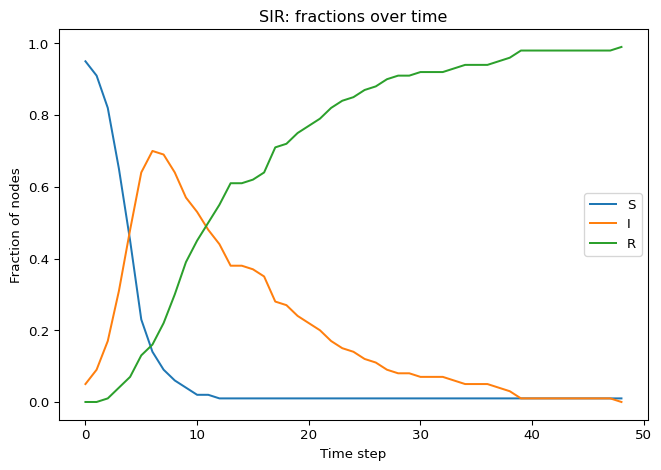

This page continues SIR on Networks. The first chunk repeats the parameters, the graph and the initial state.
Setup from the previous page
import matplotlib.pyplot as pltimport networkx as nximport numpy as npSEED =7beta =0.20mu =0.10steps =120initial_infected =5N =100def make_graph(model: str, n: int, seed: int= SEED):if model =="random":return nx.erdos_renyi_graph(n=n, p=6/ (n -1), seed=seed)if model =="small-world":return nx.watts_strogatz_graph(n=n, k=6, p=0.08, seed=seed)if model =="scale-free":return nx.barabasi_albert_graph(n=n, m=3, seed=seed)raiseValueError("model must be one of: 'random', 'small-world', 'scale-free'")def initialize_state(G, initial_infected=5, seed: int= SEED): rng = np.random.default_rng(seed) infected = rng.choice(list(G.nodes()), size=initial_infected, replace=False) state = {node: ("I"if node in infected else"S") for node in G.nodes()} nx.set_node_attributes(G, state, "state")return GG = make_graph("random", n=N, seed=SEED)
Implement the SIR Dynamics
The update is synchronous: compute all changes from the old state, then apply them.
Exercise
Write step_sir(G, beta, mu), one synchronous step of the SIR update. It differs from step_sis in one place: an infected node that recovers moves to “R”, and “R” nodes never change.
def step_sir(G, beta, mu):# TODO: read current states from G.nodes[u]["state"]# TODO: build new_state dict with values in {"S","I","R"}# TODO: write new_state back via nx.set_node_attributesreturn G
Solution
def step_sir(G, beta, mu): current = {u: G.nodes[u]["state"] for u in G.nodes()} new_state = current.copy()for u in G.nodes():if current[u] =="S": m =sum(1for v in G.neighbors(u) if current[v] =="I")if m >0: p_infect =1- (1- beta) ** mif np.random.random() < p_infect: new_state[u] ="I"elif current[u] =="I":if np.random.random() < mu: new_state[u] ="R"else:# "R" stays "R"pass nx.set_node_attributes(G, new_state, "state")return G
Exercise
Wrap step_sir into a simulator. Compared to SIS, you track all three counts: \(S(t), I(t), R(t)\). Stop early when no node is infected, since nothing can change after that.
def run_sir(G, beta, mu, steps=100, initial_infected=5, seed=SEED): H = G.copy()# Make the whole run reproducible (step_sir uses np.random.random) np.random.seed(seed) initialize_state(H, initial_infected=initial_infected, seed=seed)def counts(H): S =sum(H.nodes[u]["state"] =="S"for u in H.nodes()) I =sum(H.nodes[u]["state"] =="I"for u in H.nodes()) R =sum(H.nodes[u]["state"] =="R"for u in H.nodes())return S, I, R S0, I0, R0 = counts(H) S_counts = [S0] I_counts = [I0] R_counts = [R0]for _ inrange(steps):if I_counts[-1] ==0:break step_sir(H, beta=beta, mu=mu) S, I, R = counts(H) S_counts.append(S) I_counts.append(I) R_counts.append(R)return S_counts, I_counts, R_counts
Run and Visualize
The “epidemic curve” in SIR typically shows a single peak in \(I(t)\) and then decay to zero.

Figure 1: SIR epidemic curve (fractions of S, I, R over time) on one network realization.
Key Questions to Answer
Here are two precise, testable questions that are specific to SIR:
Can the network become fully infected? That is, does there exist a time \(t\) such that \(I(t)=N\)?
Can the network become fully “healed”? That is, does there exist a time \(t\) such that \(I(t)=0\)?
In SIR, the second question has a clean answer:
Yes. For a finite graph with \(\mu>0\), you eventually reach \(I(t)=0\) and then you are stuck forever (absorbing state).
The first question depends on \((\beta,\mu)\) and the network. It can happen transiently, but it is not an absorbing state.
Exercise
Answer these questions, using Figure 1 and your own runs:
In SIR, is “fully healed” the same as “everyone is susceptible again”? Why not?
What does “final epidemic size” mean here? (Hint: look at \(R(\infty)\).)
Can you have an epidemic with a large peak but small final size? Or vice versa?
Compare two graphs with the same \(N\) and similar average degree: which features (hubs, clustering, path length) do you expect to increase \(R(\infty)\)?
Solution
No. When \(I = 0\) every node is either S or R. The recovered nodes stay immune, so the network does not return to its initial state. In SIS, by contrast, \(I = 0\) means everyone is susceptible again.
The final epidemic size is \(R(\infty)/N\), the fraction of nodes that were ever infected, including the initial ones. You read it from the last value of the R curve once \(I = 0\).
A large peak with a small final size is impossible: every node that is infected at the peak ends in R, so \(R(\infty) \ge \max_t I(t)\). The reverse is possible. On a ring or a lattice with few shortcuts the infection travels as a slow front: only a few nodes are infected at any time, but the front can eventually reach most of the network.
Hubs and short paths increase \(R(\infty)\). The SIR threshold \(T_c = \langle k \rangle / (\langle k^2 \rangle - \langle k \rangle)\) decreases when the degree distribution is broader (newman2002spread?), and short paths let the outbreak reach distant parts of the network before it dies out. High clustering tends to decrease \(R(\infty)\), because many infection attempts hit neighbours that are already infected or recovered.
What’s Next?
Compare SIS and SIR: how does permanent immunity change the long-run outcome? The next page asks when an epidemic can spread at all.
---title: "SIR Simulation"subtitle: "Module 5: Complex Networks"format: html---This page continues [SIR on Networks](sir-network.qmd). The first chunk repeats the parameters, the graph and the initial state.```{python}#| code-fold: true#| code-summary: "Setup from the previous page"import matplotlib.pyplot as pltimport networkx as nximport numpy as npSEED =7beta =0.20mu =0.10steps =120initial_infected =5N =100def make_graph(model: str, n: int, seed: int= SEED):if model =="random":return nx.erdos_renyi_graph(n=n, p=6/ (n -1), seed=seed)if model =="small-world":return nx.watts_strogatz_graph(n=n, k=6, p=0.08, seed=seed)if model =="scale-free":return nx.barabasi_albert_graph(n=n, m=3, seed=seed)raiseValueError("model must be one of: 'random', 'small-world', 'scale-free'")def initialize_state(G, initial_infected=5, seed: int= SEED): rng = np.random.default_rng(seed) infected = rng.choice(list(G.nodes()), size=initial_infected, replace=False) state = {node: ("I"if node in infected else"S") for node in G.nodes()} nx.set_node_attributes(G, state, "state")return GG = make_graph("random", n=N, seed=SEED)```## Implement the SIR DynamicsThe update is synchronous: compute all changes from the old state, then apply them.::: {.callout-note}## ExerciseWrite `step_sir(G, beta, mu)`, one synchronous step of the SIR update. It differs from `step_sis` in one place: an infected node that recovers moves to "R", and "R" nodes never change.```pythondef step_sir(G, beta, mu):# TODO: read current states from G.nodes[u]["state"]# TODO: build new_state dict with values in {"S","I","R"}# TODO: write new_state back via nx.set_node_attributesreturn G```:::::: {.callout-tip collapse="true"}## Solution```{python}#| echo: true#| message: false#| warning: falsedef step_sir(G, beta, mu): current = {u: G.nodes[u]["state"] for u in G.nodes()} new_state = current.copy()for u in G.nodes():if current[u] =="S": m =sum(1for v in G.neighbors(u) if current[v] =="I")if m >0: p_infect =1- (1- beta) ** mif np.random.random() < p_infect: new_state[u] ="I"elif current[u] =="I":if np.random.random() < mu: new_state[u] ="R"else:# "R" stays "R"pass nx.set_node_attributes(G, new_state, "state")return G```:::::: {.callout-note}## ExerciseWrap `step_sir` into a simulator. Compared to SIS, you track **all three** counts: $S(t), I(t), R(t)$. Stop early when no node is infected, since nothing can change after that.```pythondef run_sir(G, beta, mu, steps=100, initial_infected=5, seed=SEED):# TODOreturn S_counts, I_counts, R_counts```:::::: {.callout-tip collapse="true"}## Solution```{python}#| echo: true#| message: false#| warning: falsedef run_sir(G, beta, mu, steps=100, initial_infected=5, seed=SEED): H = G.copy()# Make the whole run reproducible (step_sir uses np.random.random) np.random.seed(seed) initialize_state(H, initial_infected=initial_infected, seed=seed)def counts(H): S =sum(H.nodes[u]["state"] =="S"for u in H.nodes()) I =sum(H.nodes[u]["state"] =="I"for u in H.nodes()) R =sum(H.nodes[u]["state"] =="R"for u in H.nodes())return S, I, R S0, I0, R0 = counts(H) S_counts = [S0] I_counts = [I0] R_counts = [R0]for _ inrange(steps):if I_counts[-1] ==0:break step_sir(H, beta=beta, mu=mu) S, I, R = counts(H) S_counts.append(S) I_counts.append(I) R_counts.append(R)return S_counts, I_counts, R_counts```:::## Run and VisualizeThe "epidemic curve" in SIR typically shows a single peak in $I(t)$ and then decay to zero.```{python}#| label: fig-sir-curve#| fig-cap: "SIR epidemic curve (fractions of S, I, R over time) on one network realization."#| fig-alt: 'Fractions of susceptible, infected, and recovered nodes over time for a single run of the SIR model.'#| fig-width: 6#| fig-height: 4#| echo: false#| message: false#| warning: falseS, I, R = run_sir(G, beta=beta, mu=mu, steps=steps, initial_infected=initial_infected, seed=SEED)t = np.arange(len(I))N0 = G.number_of_nodes()plt.plot(t, np.array(S) / N0, label="S")plt.plot(t, np.array(I) / N0, label="I")plt.plot(t, np.array(R) / N0, label="R")plt.xlabel("Time step")plt.ylabel("Fraction of nodes")plt.title("SIR: fractions over time")plt.legend()plt.tight_layout()plt.show()```## Key Questions to AnswerHere are two precise, testable questions that are *specific* to SIR:- **Can the network become fully infected?** That is, does there exist a time $t$ such that $I(t)=N$?- **Can the network become fully "healed"?** That is, does there exist a time $t$ such that $I(t)=0$?In SIR, the second question has a clean answer:- **Yes.** For a finite graph with $\mu>0$, you eventually reach $I(t)=0$ and then you are stuck forever (absorbing state).The first question depends on $(\beta,\mu)$ and the network. It can happen transiently, but it is not an absorbing state.::: {.callout-note}## ExerciseAnswer these questions, using @fig-sir-curve and your own runs:- In SIR, is "fully healed" the same as "everyone is susceptible again"? Why not?- What does "final epidemic size" mean here? (Hint: look at $R(\infty)$.)- Can you have an epidemic with a large peak but small final size? Or vice versa?- Compare two graphs with the same $N$ and similar average degree: which features (hubs, clustering, path length) do you expect to increase $R(\infty)$?:::::: {.callout-tip collapse="true"}## Solution- No. When $I = 0$ every node is either S or R. The recovered nodes stay immune, so the network does not return to its initial state. In SIS, by contrast, $I = 0$ means everyone is susceptible again.- The final epidemic size is $R(\infty)/N$, the fraction of nodes that were ever infected, including the initial ones. You read it from the last value of the R curve once $I = 0$.- A large peak with a small final size is impossible: every node that is infected at the peak ends in R, so $R(\infty) \ge \max_t I(t)$. The reverse is possible. On a ring or a lattice with few shortcuts the infection travels as a slow front: only a few nodes are infected at any time, but the front can eventually reach most of the network.- Hubs and short paths increase $R(\infty)$. The SIR threshold $T_c = \langle k \rangle / (\langle k^2 \rangle - \langle k \rangle)$ decreases when the degree distribution is broader [@newman2002spread], and short paths let the outbreak reach distant parts of the network before it dies out. High clustering tends to decrease $R(\infty)$, because many infection attempts hit neighbours that are already infected or recovered.:::## What's Next?Compare SIS and SIR: how does permanent immunity change the long-run outcome? The next page asks when an epidemic can spread at all.[Epidemic Threshold](epidemic-threshold.qmd){.btn .btn-primary}